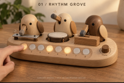
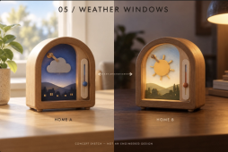
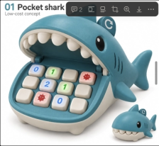
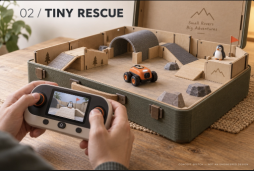

Rhythm GrovePlayful electronics
A.T Matrix product studio
We turn playful electronic concepts into intuitive everyday products — then test demand before we build.
Concept-stage work · Your feedback shapes what comes next



Product ideas
These are early concepts, not finished products. Follow an idea to show interest and help us decide where to spend our limited development time.
01 / PLAYFUL ELECTRONICS
Choose a bird, give it a rhythm, then combine the characters to create a small tabletop song.
Would families value open-ended music play enough to choose this over a normal electronic keyboard or toy?

Concept02 / MINI ROBOTICS
Drive a miniature camera rover through a tabletop rescue course and see the mission from the robot's point of view.
Is the first-person camera experience compelling enough without making the rover or playset too expensive?
03 / CONNECTED HOME
A pair of small ambient displays that share room conditions or a simple visual signal between two spaces.
Which use is strongest: room comfort, long-distance family connection, or an ambient status signal?
04 / LEARNING THROUGH PLAY
A friendly, low-cost physical arithmetic game with tactile number keys and a simple display hidden in the shark.
Can a tactile character toy make short maths practice more engaging without becoming another disposable gadget?
From idea to evidence
Each stage has a decision gate. An attractive idea only moves forward when customer behaviour and technical evidence justify the next investment.
Define the user, problem and realistic price.
Build only enough to test the key experience.
Measure interviews, enquiries and deposits.
Commit when demand and delivery economics agree.
Our point of view
Many products begin with complicated engineering and expect users to adapt. We begin with a human experience — an everyday activity, a playful interaction or a small frustration — and design the technology around it.
Our products combine physical design, electronics and connected systems to make sophisticated technology feel intuitive, useful and enjoyable.
Advanced technology, made tangible.Help choose the next build
Follow the concepts you would genuinely consider using or buying. This demo stores choices only in your browser and does not submit personal information.
Review the ideas ↑